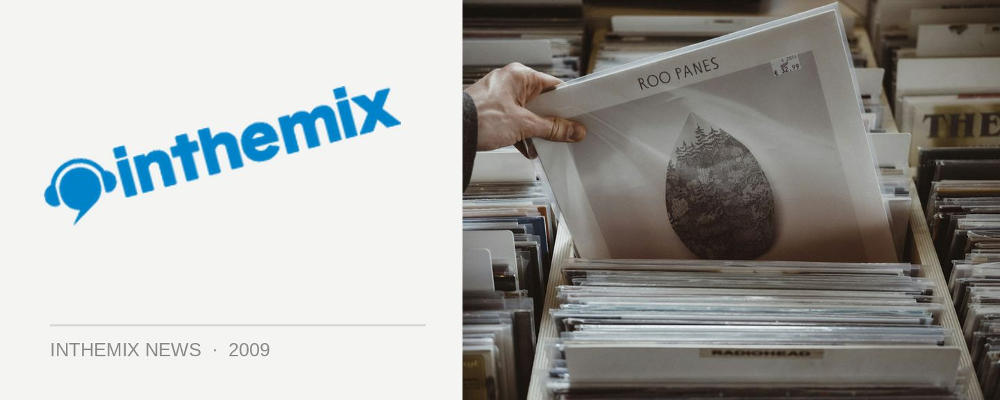

Ed Hardy & more banned in militant Melbourne dress code
Ed Hardy. Skinny jeans. V-neck shirts. Pointed white shoes. Polo shirts with the collars up. To all of this so-called ‘metrosexual’ attire, Melbourne club promoter Scott Mellor says “NO”. He says it’s a move to end the “sports jock mentality” he reckons is on the rise in the city’s clubs, as well as growing nightlife aggression. So anyone turns up to his regular Friday night Dorcia party with even a single Ed Hardy-style skull or dragon emblazoned on their clothing will be turned away at the door. You have been warned!
“We are really trying to push a party night that is a safe place to go and have a good time without worrying about safety,” Mellor told The Herald Sun this week, speaking on his event that goes down fortnightly in Melbourne at the Ding Dong Lounge. He’s gone as far as to advertise the night’s dress code openly on billposters around the city. “No metrosexual attire, no aggression, no problems,” the advertising says.
“We wanted to shed light on the problems with nightlife in Australia. We took everything that we disliked about going out to clubs and inverted it … no dressing up like David Beckham,” Mellor says. “We are about creating an environment where people can be comfortable and confident.”
Other items of attire on Scott Mellor’s shitlist include tight T-shirts, shirts with numbers on them, as well as men sporting either blond tips or dyed rats tails (a criminal offence to begin with). “We are not turning away people who look after themselves, wear product in their hair or dress with a degree of style. We are simply providing a venue for people who don’t subscribe to the standards of 90 per cent of other clubs.”
What ITM wants to know is, why wasn’t there someone to show this much leadership when the obnoxious fluoro clothing craze was sweeping the country? Those trucker hats were pretty ubiquitous at festivals for a couple of years. Maybe we need to deploy a rogue club promoter who is willing to take on tiresome and overdone gestures, like the ‘leg lift’ and the ‘pussy lick’? How about a campaign against punters who throw their arms around on the dancefloor without any respect for personal space? The potential for targeting stuff that annoys and irritates is endless.